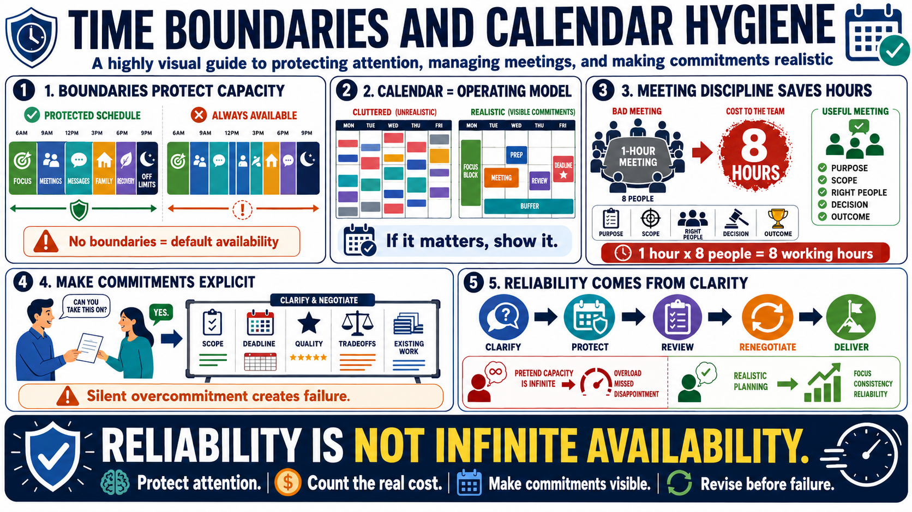

Time Boundaries and Commitments
Connecting to LMS... Progress: in progress

Narration
Time boundaries define when attention is available, when it is protected, and when it is off limits. Boundaries can apply to meetings, messages, focus blocks, work hours, recovery, family commitments, and decision windows. A boundary is not a hostile wall. It is an agreement that helps people understand capacity and reliability. Without boundaries, availability can become a default that quietly consumes all other priorities.
Calendar hygiene means keeping commitments visible and realistic. If focus time matters, it should appear somewhere. If a meeting needs preparation, that preparation should be counted. If a deadline requires review, the review should not be assumed to happen magically. A calendar is not just a record of meetings. It is an operating model for attention, commitments, and constraints.
Meeting discipline protects the time of everyone involved. A useful meeting has a purpose, a scope, the right participants, and a decision or outcome that justifies the cost. A one-hour meeting with eight people is not one hour of time; it is eight working hours, plus preparation and recovery. Reducing unnecessary meetings is not antisocial. It is a basic form of professional respect.
Commitments should be explicit, visible, and reviewable. Silent overcommitment often happens when people accept work without renegotiating scope, deadline, quality level, or existing responsibilities. Reliable people do not create reliability by pretending capacity is infinite. They create it by clarifying what is being promised, what tradeoffs are required, and when a commitment needs to be revised before it becomes a failure.